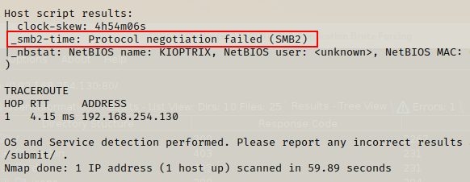

Enumerate SMB
Continuing fom the previous session we have enumerated the http port (80), now we will do the same for port 139 is the SMB port. SMB is the file-sharing port which is left open for most websites to allow sharing of files.
SMB is commonly used in work environments & internal environments. If you used a shared folder with other colleagues or individuals then you would be using SMB to share the data between computers.
If we take a look at the nmap scan, we want to find any additional information on SMB. Close to the end of the results, we can see SMB2 in the Host script results.

More information about the version of SMB2 is needed
We need to find the version of SMB to be able to check for exploits.
We will try to make establish a connection with the SMB port. If we can establish a connection and get access, we can see if there any sensitive information - login details, passwords, etc.
Metasploit
This is a very good built in exploitation framework in Kali, it will allow you to run exploit scripts, payloads and more! To run enter msfconsole in the terminal.

Your options will be shown where you can navigate through the menu or simply search for what we want.

auxiliary is scanning and enumaration modules.
search smb

136 results are returned
Let's study the syntax. The first part tells us what type of module it is; the next part tells us what type of action the module is doing.

This is an auxiliary (enumeration) module, that captures data from the SMB
What we want to look for is an auxiliary module for the SMB version. As you can see, it is a little time consuming tryign to find the right one. If you know the name of tehe module you are searching for you can write it as below
search smb/smb_version

To run the moudle we use the use keyword followed by the path of the module.

You will know when the module is activated becasue you will see the module name highlighted in the terminal. It's a good practice to enter info or options to see what possibilities are available.
We are given the names of the different options we can use for the module - think of them like function arguments.
RHOSTS refers to remote hosts. We can add a single hosts or a range of hosts using CIDR identifiers. We also get a brief description of each option available.
Next we to set our RHOSTS (which will be out target's IP address).

set RHOSTS 192.168.254.130
Enter run to execute the module

We can take some information from th eresults which will be useful to us.
We can make a note of the Samba version because that can be useful to us - find exploits on the version number.
SMBclient
This is a Kali Linux tool that allows you to make an anonymous connection to the SMB. If you are able to make a connection, then you have gained access to potentially sensitive data or information which may be able to help your exploit further. You run SMBclient in the terminal:
smbclient -L \\192.168.254.130 or smbclient -L \\\\192.168.254.130\\

-L returns a list of results
You will be prompted to sign into but becasue we do not know the password we can hit enter.

We can see 2x shared files in the results - IPC$ and ADMIN$. We can check the contents of the file by adding the directory on top of our original scan (remove the list tag).
smbclient \\\\192.168.254.130\\ADMIN$

The results tell us the connection failed. We can do the same to check the IPS$ page.
smbclient \\\\192.168.254.130\\IPS$

The results tell us the connection failed